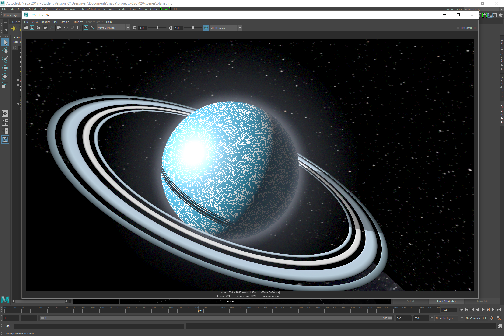

Final Animation
Computer Animation
Spring 2017
Due 5/10/2017
Mitchell Kucy and Ivan Echevarria
For our final project, we decided to make a space battle between the star ship Enterprise and a Romulan Warbird. Our plans for the animation went through several iterations before coming to the sequence that we have today.
The Enterprise is approaches a planet in the Neutral Zone, and it gets the attention of a cloaked Romuian Warbird. The Warbird stalks the Enterprise until it opens fire, and a space combat dogfight ensues. The Enterprise, though battered by the Warbird's disruptors, gets the better of the opposing ship and fires a photon torpedo that strikes a fatal blow. The Enterprise then enters maximum warp and leaves the Neutral Zone.
We put a lot of effort into the models and particle effects in this animation - perhaps half our time was spent optimizing the number of lights and particles so our render time was reasonable. Mitchell had already built the Enterprise for a previous project, so he got to work on the Warbird. Using a number of reference images, he built a very accurate model of the ship.

I worked on planet model. I started out with a sphere, some flattened tori, and a spherical volume primitive to give the impression of an atmosphere.
From here, I added a mountain texture in a Blinn shader and then added noise to the mountain texture to give it distinctive swirls. This gave the impression of a watery ice planet.
We used a combination of straight keyframes and motion paths to animate our scene. The opening shot (below) is a relatively simple motion path.